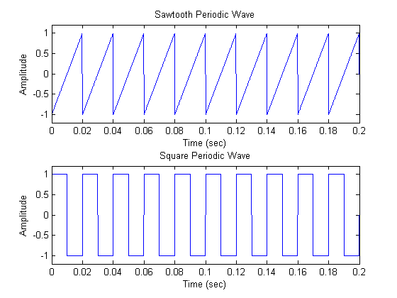
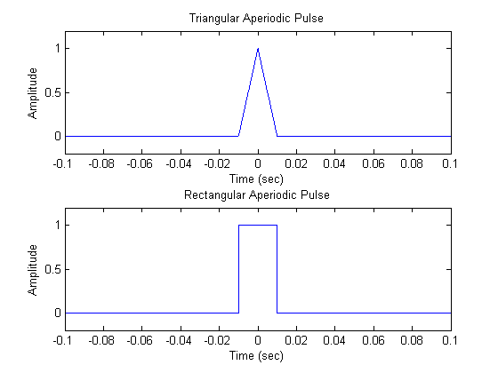
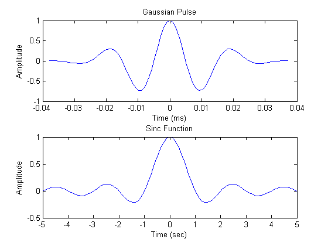
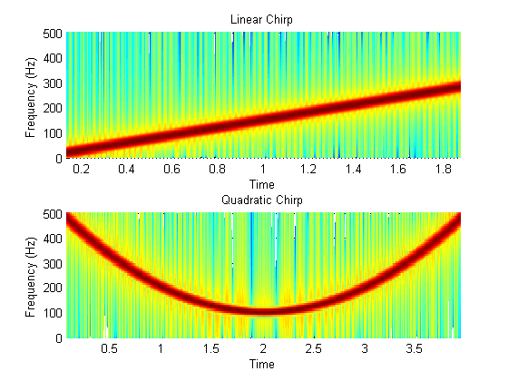
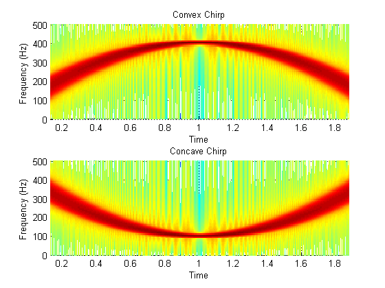
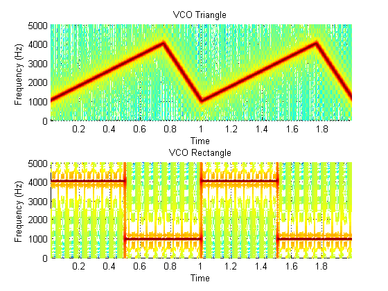
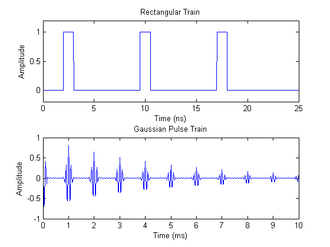

波形生成
Signal Processing Toolbox™ には、広く使用されている周期的な波形と非周期的な波形、数列 (インパルス、ステップ、ランプ)、多チャンネル信号、パルス列、関数 sinc とディリクレ関数を生成するための関数が用意されています。このデモは、それらのいくつかを説明します。
目次
周期的な波形
ツールボックスには、MATLAB® の関数 sin および関数 cos 以外に、関数 sawtooth や関数 square など、周期的な信号を生成する関数が用意されています。
関数 sawtooth は、ピークが ±1 で周期が 2*pi のノコギリ波を生成します。オプションの幅パラメーターは、信号が最大となる非整数倍数 2*pi を指定します。
関数 square は、周期が 2*pi の方形波を生成します。オプションのパラメーターは、信号が正となる周期の割合であるデューティ比を指定します。
10KHz のサンプリング レートを持つ 50Hz の ノコギリ波 (それぞれ矩形) を 1.5 秒間生成するには、次のようにします。
fs = 10000; t = 0:1/fs:1.5; x1 = sawtooth(2*pi*50*t); x2 = square(2*pi*50*t); subplot(211),plot(t,x1), axis([0 0.2 -1.2 1.2]) xlabel('Time (sec)');ylabel('Amplitude'); title('Sawtooth Periodic Wave') subplot(212),plot(t,x2), axis([0 0.2 -1.2 1.2]) xlabel('Time (sec)');ylabel('Amplitude'); title('Square Periodic Wave')
非周期的な波形
三角パルス、矩形パルス、およびガウス パルスを生成するには、ツールボックスの関数 tripuls、関数 rectpuls、および関数 gauspuls を使用します。
関数 tripuls は、サンプリングされた非周期的な高さ 1 の三角パルスを t = 0 を中心として既定の幅 1 で生成します。
関数 rectpuls は、サンプリングされた非周期的な高さ 1 の矩形パルスを t = 0 を中心として既定の幅 1 で生成します。振幅がゼロ以外の間隔は、右側に開くように定義され、rectpuls(-0.5) = 1、rectpuls(0.5) = 0 になります。
10KHz のサンプリング レートおよび 20ms の幅を持つ三角パルス (それぞれ矩形) を 2 秒間生成するには、次のようにします。
fs = 10000; t = -1:1/fs:1; x1 = tripuls(t,20e-3); x2 = rectpuls(t,20e-3); subplot(211),plot(t,x1), axis([-0.1 0.1 -0.2 1.2]) xlabel('Time (sec)');ylabel('Amplitude'); title('Triangular Aperiodic Pulse') subplot(212),plot(t,x2), axis([-0.1 0.1 -0.2 1.2]) xlabel('Time (sec)');ylabel('Amplitude'); title('Rectangular Aperiodic Pulse') set(gcf,'Color',[1 1 1]),
関数 gauspuls は、指定した時間、中心周波数、および比帯域幅のガウス変調正弦波パルスを生成します。
関数 sinc は、入力ベクトルまたは行列の数学関数 sinc を計算します。関数 sinc は、幅 2*pi と高さ 1 の矩形パルスの連続逆フーリエ変換です。
1MHz のサンプリング レートで、60% の帯域幅を持つ 50kHz のガウス RF パルスを生成します。包絡線がピークから 40dB 減衰するところでパルスを打ち切ります。
tc = gauspuls('cutoff',50e3,0.6,[],-40);
t1 = -tc :1e-6 :tc;
y1 = gauspuls(t1,50e3,0.6);
線形間隔ベクトルの関数 sinc を生成します。
t2 = linspace(-5,5); y2 = sinc(t2);
subplot(211),plot(t1*1e3,y1); xlabel('Time (ms)');ylabel('Amplitude'); title('Gaussian Pulse') subplot(212),plot(t2,y2); xlabel('Time (sec)');ylabel('Amplitude'); title('Sinc Function') set(gcf,'Color',[1 1 1]),
スイープ周波数波形
ツールボックスの関数を使用して、関数 chirp などのスイープ周波数波形を生成することもできます。2 つのオプションのパラメーターは、別のスイープ メソッドと初期位相 (単位: degree) を指定します。以下の例では、関数 chirp を使用して、線形または 2 次の凸および凹、2 次チャープを生成します。
線形チャープを生成します。
t = 0:0.001:2; % 2 secs @ 1kHz sample rate ylin = chirp(t,0,1,150); % Start @ DC, cross 150Hz at t=1sec
2 次チャープを生成します。
t = -2:0.001:2; % +/-2 secs @ 1kHz sample rate yq = chirp(t,100,1,200,'q'); % Start @ 100Hz, cross 200Hz at t=1sec
スペクトログラムを計算して、表示します。
subplot(211),spectrogram(ylin,256,250,256,1E3,'yaxis'); title('Linear Chirp') subplot(212),spectrogram(yq,128,120,128,1E3,'yaxis'); title('Quadratic Chirp') set(gcf,'Color',[1 1 1]);
凸 2 次チャープを生成します。
t = -1:0.001:1; % +/-1 second @ 1kHz sample rate fo=100; f1=400; % Start at 100Hz, go up to 400Hz ycx = chirp(t,fo,1,f1,'q',[],'convex');
凹 2 次チャープを生成します。
t = -1:0.001:1; % +/-1 second @ 1kHz sample rate fo=400; f1=100; % Start at 400Hz, go down to 100Hz ycv=chirp(t,fo,1,f1,'q',[],'concave');
スペクトログラムを計算して、表示します。
subplot(211),spectrogram(ycx,256,255,128,1000,'yaxis'); title('Convex Chirp') subplot(212),spectrogram(ycv,256,255,128,1000,'yaxis'); title('Concave Chirp') set(gcf,'Color',[1 1 1]);
別のファンクション ジェネレーターは関数 vco (電圧制御発振器) で、入力ベクトルによって決定された周波数で振動する信号を生成します。次の 2 つの例では、三角形および矩形の入力を持つ関数 vco を使用します。
瞬間的な周波数が時間の三角関数 (それぞれ矩形) となる 10kHz でサンプリングした 2 秒間の信号を生成します。
fs = 10000; t = 0:1/fs:2; x1 = vco(sawtooth(2*pi*t,0.75),[0.1 0.4]*fs,fs); x2 = vco(square(2*pi*t),[0.1 0.4]*fs,fs);
生成した信号のスペクトログラムをプロットします。
subplot(211),spectrogram(x1,kaiser(256,5),220,512,fs,'yaxis'); title('VCO Triangle') subplot(212),spectrogram(x2,256,255,256,fs,'yaxis') title('VCO Rectangle') set(gcf,'Color',[1 1 1]);
パルス列
パルス列を生成するには、関数 pulstran を使用します。次の 2 つの例で、この関数の使用方法を示します。
レート 100GHz、間隔 7.5nS でサンプリングされた 2GHz の矩形パルスの列を生成します。
fs = 100E9; % sample freq D = [2.5 10 17.5]' * 1e-9; % pulse delay times t = 0 :1/fs :2500/fs; % signal evaluation time w = 1e-9; % width of each pulse yp = pulstran(t,D,@rectpuls,w);
10kHz で 50% の帯域幅を持つ周期性ガウス パルス信号を生成します。パルス反復周波数は 1kHz、サンプリング レートは 50kHz、パルス列の長さは 10 ミリ秒です。反復振幅は毎回 0.8 ずつ減衰します。次の例では、生成関数を参照するために関数ハンドルを使用します。
T = 0 :1/50E3 :10E-3; D = [0 :1/1E3 :10E-3 ; 0.8.^(0:10)]'; Y = pulstran(T,D,@gauspuls,10E3,.5);
subplot(211),plot(t*1e9,yp);axis([0 25 -0.2 1.2]) xlabel('Time (ns)'); ylabel('Amplitude'); title('Rectangular Train') subplot(212),plot(T*1e3,Y) xlabel('Time (ms)'); ylabel('Amplitude'); title('Gaussian Pulse Train') set(gcf,'Color',[1 1 1]),